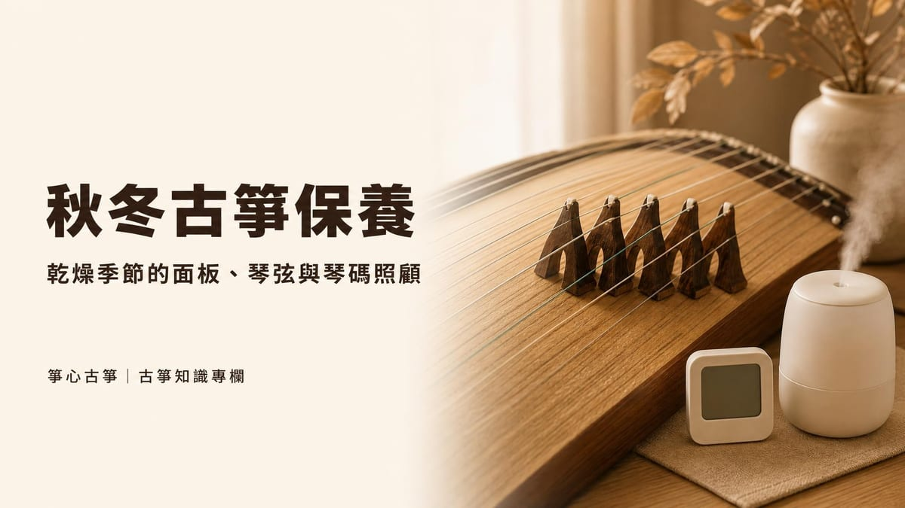

樂器知識
古箏和古琴有什麼不同？外型、音色、曲目一次分清楚
古箏和古琴常被搞混，但其實是兩種不同的樂器：古琴只有 7 弦、沒有琴碼，古箏最常見是 21 弦、每弦都有可移動的琴碼。本⋯

秋冬東北季風南下之後,冷空氣通常先濕後乾,天氣穩定下來時整體環境會變得比較乾燥;許多家庭也會在這段時間開暖氣或使用除濕機,讓室內濕度進一步下降。古箏的琴身與面板都是木質構造,木材會隨著環境濕度熱脹冷縮,面板、琴弦與琴碼(雁柱)這三個部位,正是乾燥季節最容易出狀況的地方:面板可能出現細紋甚至裂痕,琴弦張力改變導致走音變快,琴碼也可能因為面板收縮而變得容易滑動。
這些狀況不一定會立刻發生,但如果放任不管,面板裂痕可能愈來愈深,甚至影響音色與結構。以下就從面板、琴弦、琴碼三個部位,整理秋冬乾燥季節實際可以怎麼照顧。
古箏的琴身是木製的空心盒狀結構,面板下方中空以產生共鳴,弦數最常見的是 21 弦,每根弦下方都有一個稱為「雁柱」的琴碼,移動琴碼就能調整音高。木材本身會吸收或釋放環境中的水分,濕度下降時木材纖維跟著收縮,濕度上升時則會膨脹;這種反覆的熱脹冷縮,正是乾燥季節古箏容易出狀況的根本原因。
如果想先了解古箏的基本構造與調弦方式,可以參考本站古箏是什麼:歷史、構造、調弦與流派一文;日常清潔與一般保養步驟,則可參考古箏保養與調音,本篇會聚焦在秋冬乾燥季節特別需要留意的地方。
面板是古箏最容易因乾燥而受影響的部位。本站的保養指南建議古箏存放濕度維持在約 45–65% 之間;也有古箏行資料提到,濕度長期低於 30% 時,面板有可能產生難以修復的裂痕與變形。秋冬開暖氣的房間,濕度很容易跌到這個範圍以下,因此特別需要留意。
| 常見狀況 | 可能原因 | 建議做法 |
|---|---|---|
| 面板出現細微紋路 | 環境濕度偏低,木材收縮 | 儘快提高房間濕度,避免紋路持續擴大 |
| 面板出現明顯裂痕 | 長期處於低濕度環境,或溫差劇烈變化 | 請專業琴師評估是否需要填補或修復 |
| 漆面或貼邊出現細小剝落 | 木材與漆層收縮速度不同 | 先穩定環境濕度,再請老師或琴師檢查 |
發現裂痕時,先別急著自己動手處理,面板修復需要專業工具與經驗,處理方式也會依裂痕深淺而不同,詳細的分級處理建議可參考古箏保養與調音一文。日常清潔只建議用乾燥的軟布或軟毛刷擦拭面板與雁柱底部的灰塵,避免用濕布大面積擦拭,以免水分滲入木材。
古箏是固定音高樂器,調好弦之後每根弦對應一個音,但弦的張力與面板的狀態其實一直受環境影響。秋冬濕度變化大的時候,面板的微小變形會連動影響琴弦的張力,走音的頻率通常會比平常明顯一些,尤其是剛經歷氣溫驟降或剛開暖氣的頭幾天。
調音的基本步驟與工具介紹,可參考古箏保養與調音;如果是剛開始學習調音的初學者,建議先請老師示範一次標準音高,之後再自行練習。
琴碼俗稱「雁柱」,立在面板上支撐每一根弦,位置可以左右移動來調整音高。雁柱能穩穩站在面板上,其中一個原因是面板本身有一定的木紋粗糙度,能提供摩擦力;當面板因為乾燥而收縮或產生細微變形,雁柱與面板的接觸面可能不再完全密合,用力彈奏時就比平常更容易出現移位甚至滑動的情況。
日常照顧上,建議定期用小毛刷清理雁柱底部累積的灰塵,移動雁柱時一次只調整一個,並記住或標記原本的位置,避免事後找不到正確音高。如果古箏要長期不使用或長途搬運,也可以考慮先鬆弦、卸下雁柱,減少面板長時間受力的狀況。若雁柱經常自己移位、或怎麼調整都無法穩定,建議不要自己硬是加大力道調整,請老師或專業琴師檢查雁柱底部與面板的貼合狀況。
國外的樂器保養資料在談木質弦樂器的秋冬保養時,也提到類似的原則:暖氣會讓室內濕度下降,建議在存放樂器的房間裝設加濕器,並用濕度計隨時監測;樂器不應該直接放在暖氣旁邊,就算房間整體已經覺得暖和也一樣;從寒冷的戶外回到室內後,也應該讓樂器先適應一段時間再演奏或調音,避免溫差劇烈變化對木材與漆面造成壓力。這些原則同樣適用在古箏這類木質彈撥樂器上。
| 做法 | 原因 |
|---|---|
| 房間放置濕度計,搭配加濕器 | 秋冬開暖氣容易讓濕度掉到偏低的範圍,濕度計能即時提醒 |
| 古箏不要緊鄰暖氣、除濕機或空調出風口 | 出風口附近溫濕度變化最劇烈,面板局部容易過度乾燥 |
| 避免陽光直射的位置 | 長時間照射會加速木材乾燥,也可能使漆面變色 |
| 從戶外帶回室內後,先靜置一段時間再彈奏 | 讓木材逐漸適應新的溫濕度,減少急遽變化造成的壓力 |
秋冬乾燥對古箏來說確實是比較需要費心的季節,但只要留意濕度、避開熱源,並在面板或琴碼出現異狀時及早請專業的人檢查,大部分問題都能趁早處理,不會演變成大修復。這個季節也很適合趁機幫家裡的古箏做一次整體檢查,順便熟悉調音與日常保養的流程。
如果你還沒有自己的古箏,或是想先了解不同價位古箏的保養難易度,可以參考本站古箏價格與選購指南。還在猶豫要不要開始學古箏的話,新莊箏心古箏音樂教室提供 $350 體驗課,由老師一對一帶你認識古箏構造、基本保養與調音概念,再決定要不要繼續學習。
本站的保養指南建議古箏存放濕度維持在約 45–65% 之間;也有古箏行資料提到,濕度長期低於 30% 可能讓面板產生難以修復的裂痕與變形,秋冬開暖氣時要特別留意。
不建議。暖氣、除濕機或空調出風口附近的溫濕度變化特別劇烈,容易讓古箏局部快速乾燥,建議讓古箏與這些熱源保持一定距離,搭配濕度計與加濕器監測房間整體環境。
會。面板的狀態與琴弦的張力都會隨溫濕度變化,乾燥季節走音的情況通常比平常更明顯,建議每次彈奏前都用調音器重新確認音準。
可能是原因之一。面板因濕度變化收縮或產生細微變形時,雁柱與面板的接觸面可能不再密合,加上面板摩擦力不足,就容易在用力彈奏時滑動;經常移位的話,建議請老師或專業琴師檢查雁柱底部與面板的貼合狀況。
需要。新琴的木材與漆層還在適應環境,建議第一年秋冬格外留意室內濕度與溫差變化,並比平常更頻繁地檢查面板與調音,選購古箏的其他注意事項可參考本站的古箏選購指南。
新莊箏心古箏音樂教室提供 $350 體驗課，由老師一對一帶你認識古箏、彈出第一段旋律。
本教室位於新北市新莊區（鄰近新莊體育場、新泰國中），採預約制，為確保上課品質平日不開放參觀；預約成功後將提供詳細交通資訊。